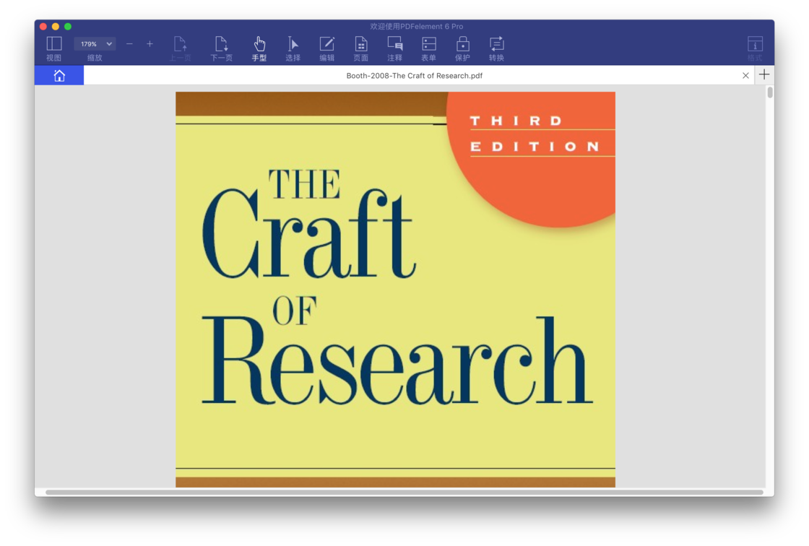
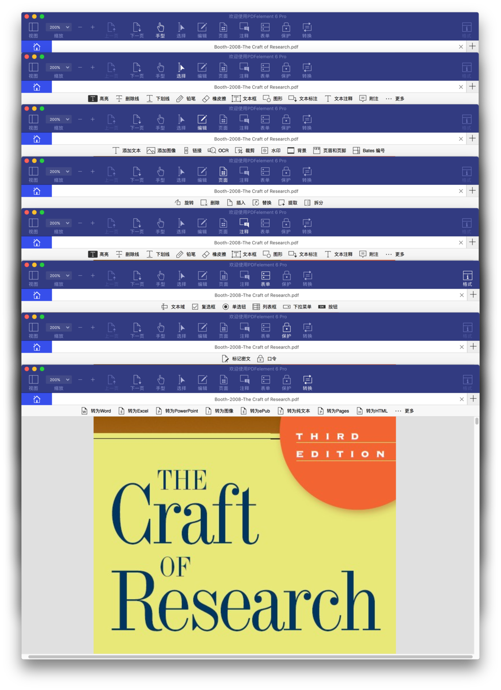
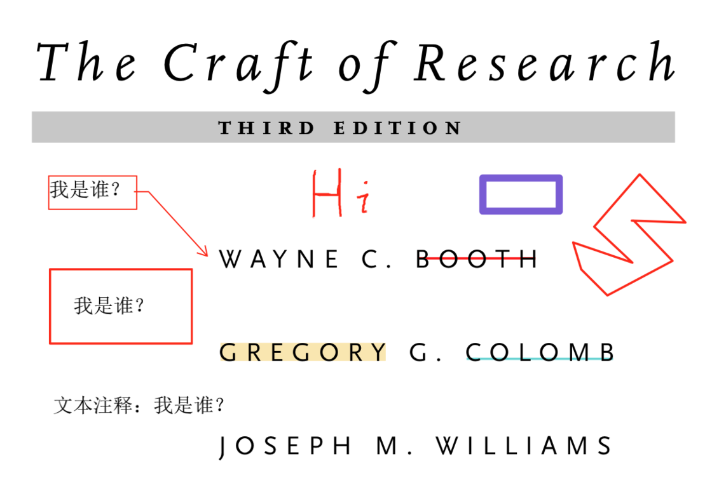
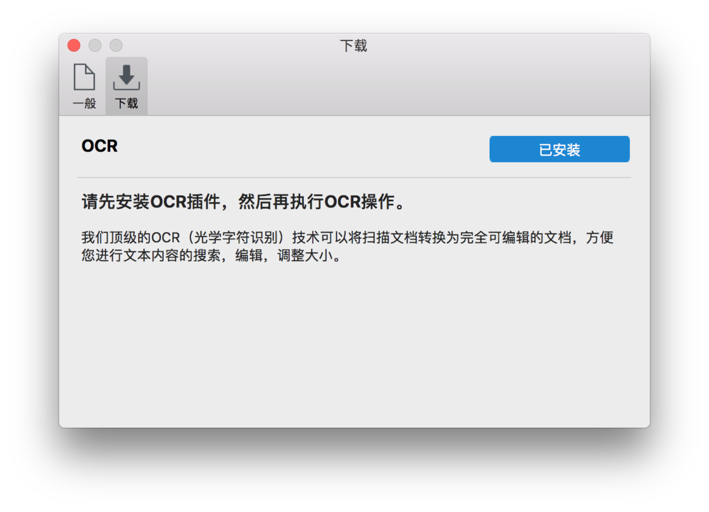
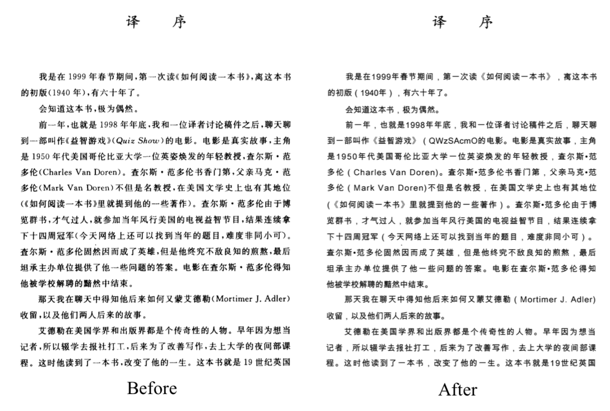

本文被少数派精选：点此查看
谈到 macOS 上的 PDF 应用，大概都会想起预览、Skim 及其衍生品、Adobe Acrobat，以及声名远扬的 PDF Expert，但你也许不曾注意到一款墙内开花墙外香的全能型 PDF 应用：PDFelement，由 万兴科技（Wondershare）出品。在 万兴科技中国官网 可以查看全世界用户的热力图。
不夸张地讲，PDFelement 不逊色于任何我们所想起的 PDF 应用，它功能全面但每一项又如此专业，堪称匠心独具的工具和艺术品。最初 Wondershare 家的 PDF 相关作品是各自独立的，15 年才将所有功能融合并推出 All-in-One 应用 PDFelement 5，于 17 年 4 月推出新应用，也即让我心血来潮写测评的 PDFelement 6，这是一款令我无限接近满意的作品。
PDFelement 6
Pro= 综合性 PDF 工具套装 = PDF 阅读器 + PDF 注释器 + PDF 编辑器 + PDF 转换器 + PDF 创建器 + 表单填写和创建 +OCR 字符识别+数据提取+批量处理+ 更多……

Chapter 1 颜值是第一生产力
PDFelement 的首页相当简约，元素排版很难挑剔出毛病，贴心的是鼠标移到六个板块上还会自动放大并显示解释。但有处女座心的我还是略有不满，首页最上部与六个板块的文字「中英文」之间均无空格。

在极短的时间内打开一份 357 页的书籍，可以看到 PDFelement 的默认阅读界面尽可能地节约了屏幕空间，此时指针默认是手型，方便快速拖拽页面。需要选中文字以执行复制或注释功能时，点选菜单栏「选择」或「注释」即可。在 PDFelement 5 中默认界面会自动显示右侧栏，影响了阅读体验，这也是我之前不写测评的原因之一。

Chapter 2 全面且专业的众多功能
PDFelement 的菜单栏中有八个选项：手型、选择、编辑、页面、注释、表单、保护、转换，每一个选项都包含着大量的实用功能，分八点一一介绍，第九点是补充的左侧边栏功能。

- 手型：快速拖拽；
- 选择：执行复制、各种格式的标注功能，也可以添加签章或签名；
- 标注功能除了包含常用的高亮、下划线等，还可以添加任意图形。文本框、文本标注、文本注释是形式不同的标注功能，文本框是实体背景，文本注释是透明背景，本文标注是带箭头的文本框； 
- 铅笔是鼠标手写注释功能，遗憾的是目前并不支持触控板手写，但实际上平时也很少用到。签名也暂时不支持，但可以通过图像或摄像头导入手写签名。
- 编辑： 这是 PDFelement 的一大核心优势，编辑或添加任何内容、提取图片、裁剪、添加水印、改变背景、添加页眉页脚……几乎无所不能；
- 编辑功能可以使我们编辑任何内容，比如修改字体类型、大小、颜色；图片提取功能让我们能轻松获取任何 PDF 文档的插图；

- 编辑模块的功能太多，我觉着还是自己体验为好。OCR 功能将在后面介绍。
- 编辑功能可以使我们编辑任何内容，比如修改字体类型、大小、颜色；图片提取功能让我们能轻松获取任何 PDF 文档的插图；
- 页面：删除、插入或替换 PDF 文档任意页，或者将任意页提取出来合并成新文档；
- 注释：这与「选择」是完全一致的，为什么这样设计？因为也许有些人是想选中文字执行复制等操作，而有些人是想直接注释，但这两个目的要执行的操作相似性很高；
- 表单：我本人几乎不会用到这个功能；
- 保护：标记密文功能让我们可以将涉及隐私等文字用纯色块遮盖，也有添加或移除口令的功能；
- 转换：可以转为 Word、Excel、PowerPoint、图像、ePub、纯文本、Pages、Html、RTF；
- 左侧边栏：可以编辑书签（目录）并实现准确的定位；注释的显示相当友好，之前试用 Foxit Reader 时其注释中并不直接显示高亮、下划线等标注的文本；搜索功能也有了改善，搜索结果以页码的方式并列展示，并且可以将选定的搜索结果标记为密文。PDFelement 并不支持如 PDF Expert 那般的多 PDF 文件搜索功能，但我个人也不认为这个功能是必不可少的，至少我从来没有遇到过类似的需求……
Chapter 3 强大的 OCR 能力
PDFelement 安装包不到 30 MB，如此小的体量却有那样多的功能，这实在令我赞叹。可要想识别扫描文档则需安装 OCR 插件，大小约 500 MB，但我认真地告诉诸位：这完全值得。

OCR（光学字符识别）功能支持简繁、英、法、德、意、日、韩等 26 种语言，总体来看转换效果相当不错。以《如何阅读一本书》为例。

从实际阅读效果上看，扫描文档经 OCR 转换后文字更清晰了，但截图似乎没有凸显这一点。中英文的识别都基本没有问题，但有一处英文转换错误，原因是这处英文的字体并不是常用的。可以确定的是，文献以及绝大多数正式文档都能被 OCR 较完美地转换为可编辑的文档。
Chapter 4 简单的总结
第一章的配图展示了 PDFelement 还有批量处理和 PDF 模版库功能。批量处理指可以批量转换、去水印、提取数据等，这里着重介绍下 批量提取数据 功能，假设某天因为社团或公司工作，我们需要将大量报名表中信息整合到 Excel 中，人工处理也许需要数天，但使用批量提取数据操作可在一杯咖啡的时间完成这类工作；PDF 模版库这个功能使 PDFelement 成为能保持最初格式的 Word，在官网有大量的 PDF 英文模版。
总的来讲，PDFelement 不啻于一款优秀的 PDF 应用，她还是为我们解决各类 PDF 相关问题的伙伴。尤其是 PDFelement 6，我拜倒在她令我惊艳的颜值和功能的石榴裙下，PDFelement 5 就别想有这种待遇……
其实 PDFelement 还支持 iOS 与 Windows 平台，并且都很优秀。iOS 客户端支持 PDF 编辑、注释、拍照扫描、转换格式等操作，但其似乎还未来得及与桌面版完全同步；Windows 客户端的界面和 Office 相似度很高，功能和 macOS 基本一致。
可以在 Wondershare 官网 下载体验 macOS 或 Windows 客户端，也可在 Mac App Store 免费下载体验 PDFelement 6 或专业版（内置 OCR），但需内购以解锁部分限制。
本文应用版本：
PDFelement 6.0.0 for macOS

扫一扫即可关注微信公众号